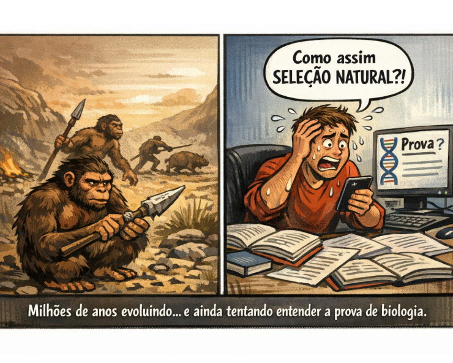
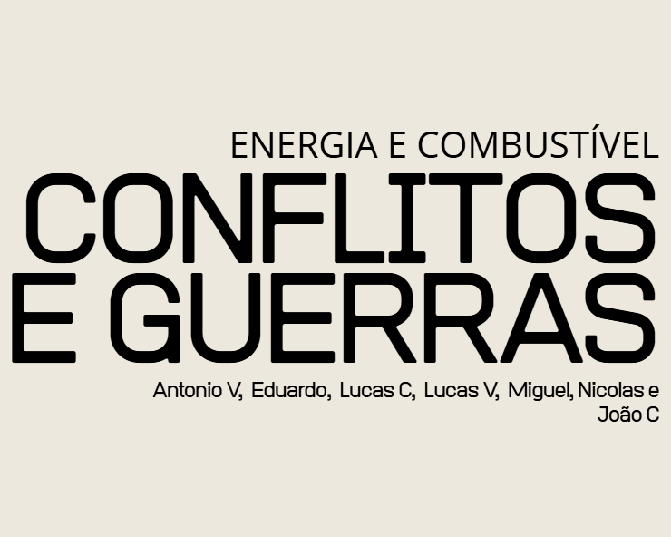
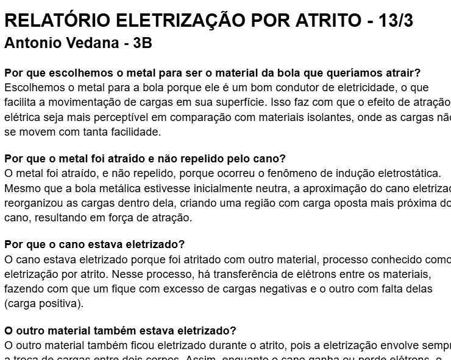
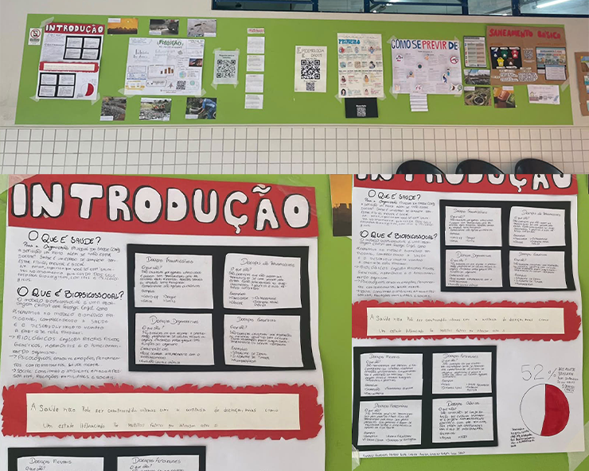
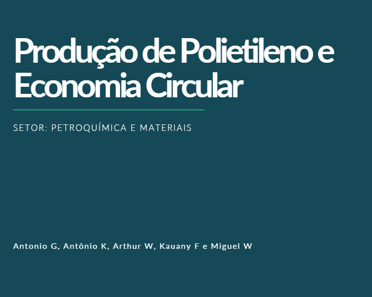
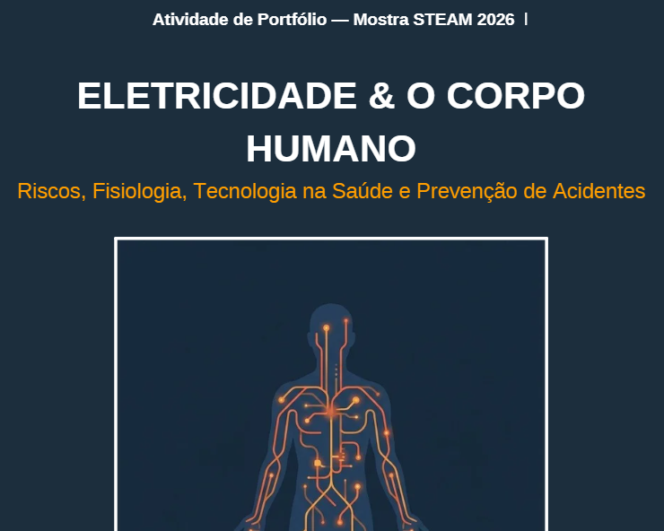
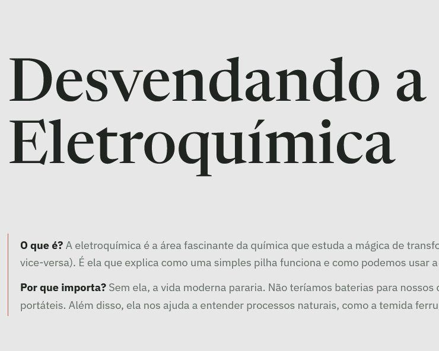

Natureza
Terceiro Ano - Ensino Médio

Meme Evolucionismo
Com base nos conteúdos estudados em sala, tínhamos como objetivo desenvolver um meme em imagem que ilustrasse conceitos do evolucionismo, junto de um relatório sobre o simulador da phet-colorado de seleção natural de coelhos, respondendo às perguntas disponibilizadas com base em nossas observações e prática do simulador.
C3 - H15, H18
C3 - Determinar os impactos das ações humanas nos ambientes, identificando suas causas e propondo soluções para a sua redução.
H15 - Comparar propostas de intervenção ambiental aplicando conhecimentos científicos e tecnológicos, observando os riscos e benefícios de sua implementação.
H18 - Identificar situações de risco ambiental na cidade onde reside.

Apresentação Combustíveis Fósseis
Neste trabalho, precisávamos elaborar uma apresentação que respondesse à pergunta: "Se já sabemos que combustíveis fósseis poluem, por que ainda usamos?", com o nosso grupo focando na parte de Guerras e Conflitos. Para isso, pesquisamos sobre o impacto dos combustíveis fósseis nas guerras da atualidade e da história, bem como a relação deles com a economia e política. Foi um trabalho muito enriquecedor, pois permitiu a nós compreendermos melhor os impactos ambientais e sociais dos combustíveis fósseis, relacionando a área de Ciências da Natureza com Ciências Humanas.
C1 - H1 | C2 - H9, H11
C1 - Compreender as ciências naturais e as tecnologias como construções humanas associadas à cultura dos povos e suas visões de mundo.
H1 - Interpretar informações apresentadas em diferentes linguagens usadas nas Ciências, como texto discursivo, gráficos, tabelas, relações matemáticas, diagramas ou representação simbólica.
C2 - Aplicar os conceitos fundamentais e estruturas procedimentais das Ciências da Natureza na explicação de fenômenos cotidianos, bem como dominar processos e práticas da investigação científica.
H9 - Explicar os conceitos de energia, matéria, vida e transformação para explicar fenômenos naturais e procedimentos tecnológicos.
H11 - Empregar procedimentos e práticas de observação, levantamento de hipótese, experimentação, coleta de dados e conclusões para resolução de problemas relacionados às Ciências da Natureza.

Eletricidade por Atrito
Para essa atividade, realizamos um experimento para observar a geração de eletricidade por atrito. Utilizamos materiais diferentes para criar eletricidade estática e analisamos suas propriedades. Após isso, produzi um relatório sobre o experimeento, respondendo às perguntas sobre o fenômeno observado. Foi uma atividade prática que nos ajudou a entender melhor o conceito de eletricidade e suas aplicações no dia a dia.
C1 - H1 | C2 - H7, H9, H11, H12
C1 - Compreender as ciências naturais e as tecnologias como construções humanas associadas à cultura dos povos e suas visões de mundo.
H1 - Interpretar informações apresentadas em diferentes linguagens usadas nas Ciências, como texto discursivo, gráficos, tabelas, relações matemáticas, diagramas ou representação simbólica.
C2 - Aplicar os conceitos fundamentais e estruturas procedimentais das Ciências da Natureza na explicação de fenômenos cotidianos, bem como dominar processos e práticas da investigação científica.
H7 - Compreender os conceitos relacionados à Química nos seus diferentes ramos: Fisico-química, Química orgânica e Química Geral.
H9 - Explicar os conceitos de energia, matéria, vida e transformação para explicar fenômenos naturais e procedimentos tecnológicos.
H11 - Empregar procedimentos e práticas de observação, levantamento de hipótese, experimentação, coleta de dados e conclusões para resolução de problemas relacionados às Ciências da Natureza.
H12 - Relacionar informações para construir modelos em ciência e tecnologia.

Mural Interativo
Essa atividade consistiu na realização de diversos cartazes para um mural conjunto de toda a turma sobre diversos temas relacionados à saúde. Após a divisão das tarefas, dividimo-nos em sub-equipes com funções específicas (como desenhista, pesquisador etc). Fiquei responsável pela pesquisa em conjunto com a realização do cartaz de introdução, que dava um panorama geral sobre o tema. Similar a outro trabalho que tivemos no ano passado, este trabalho mobilizou toda a turma em conjunto para a realização do projeto, o que ajudou a fortalecer o nosso trabalho em equipe e comunicação como turma.
C2 - H11, C3 - H15, H18, C4 - H23
C3 - Determinar os impactos das ações humanas nos ambientes, identificando suas causas e propondo soluções para a sua redução.
H11 – Empregar procedimentos e práticas de observação, coleta de dados e conclusões para resolução de problemas relacionados às Ciências da Natureza.
H15 - Comparar propostas de intervenção ambiental aplicando conhecimentos científicos e tecnológicos, observando os riscos e benefícios de sua implementação.
H18 – Identificar situações de risco ambiental na cidade onde reside.
H23 – Formular propostas de alcance individual ou coletivo, utilizando como critérios a preservação e a promoção da saúde individual e coletiva.

Seminário Estequiometria na Indústria
Após o sorteio de temas para os grupos, cada equipe desenvolveu um trabalho sobre um aspecto específico da estequiometria na indústria, com o meu grupo ficando responsavel com o polietileno e o setor petroquímico. O trabalho começou com uma pesquisa, tendo como conclusão uma apresentação (em formato de seminário) sobre o tema pesquisado. Foi um trabalho importante para solidificar nossos conhecimentos sobre o tema, ao mesmo tempo que demonstrou o quão importante a estequiometria de fato é na indústria.
C2 - H6, H7, H9
C2 - Aplicar os conceitos fundamentais e estruturas procedimentais das Ciências da Natureza na explicação de fenômenos cotidianos, bem como dominar processos e práticas da investigação científica.
H6 - Compreender os conceitos relacionados à Física nos seus diferentes ramos: Mecânica, Termologia, Óptica, Ondulatória, Eletromagnetismo e Física Moderna.
H7 - Compreender os conceitos relacionados à Química nos seus diferentes ramos: Fisico-química, Química orgânica e Química Geral.
H9 - Explicar os conceitos de energia, matéria, vida e transformação para explicar fenômenos naturais e procedimentos tecnológicos.

Cartilha Eletricidade e o Corpo Humano
Para essa atividade, desenvolvemos uma cartilha sobre a eletricidade e seu impacto no corpo humano, em formato PDF A5. Utilizamos imagens, analogias e textos explicativos para a explanação dos conceitos. Foi um trabalho divertido de realizar, que ajudou a aprofundar nossos conhecimentos sobre o tema, ao mesmo tempo que praticamos nossas habilidades de design.
C1 - H3, H4, C2 - H12, C4 - H23
C1 - Compreender as ciências naturais e as tecnologias como construções humanas associadas à cultura dos povos e suas visões de mundo.
H3 - Inferir significado de termos técnico-científicos em textos de instrumentação ou de divulgação científica.
H4 - Identificar, em textos, diagramas, gráficos, imagens e tabelas, informações relevantes para compreender um fenômeno ou conceito.
C2 - Aplicar os conceitos fundamentais e estruturas procedimentais das Ciências da Natureza na explicação de fenômenos cotidianos, bem como dominar processos e práticas da investigação científica.
H12 - Relacionar informações para construir modelos em ciência e tecnologia.
C4 - Compreender o funcionamento dos organismos vivos em geral e o ser humano em especial, considerando suas relações com o ambiente em que vivem, abordando aspectos físicos e socioculturais.
H23 - Formular propostas de alcance individual ou coletivo, utilizando como critérios a preservação e a promoção da saúde individual e coletiva.

Portfólio Digital de Eletroquímica
Neste trabalho, realizamos um projeto multifacetado sobre eletroquímica, incluindo um experimento prático, um site, um relatório, um vídeo e mais. Foi desenvolvido ao longo de duas semanas, com aulas práticas no Maker. Foi um trabalho bastante envolvente, pois nos permitiu explorar a eletroquímica na prática ao mesmo tempo que pesquisávamos sobre o tema. Para o experimento, ligamos um LED com limão, cobre e zinco.
C2 - H7, H9, H11
C2 - Aplicar os conceitos fundamentais e estruturas procedimentais das Ciências da Natureza na explicação de fenômenos cotidianos, bem como dominar processos e práticas da investigação científica.
H7 - Compreender os conceitos relacionados à Química nos seus diferentes ramos: Fisico-química, Química orgânica e Química Geral.
H9 - Explicar os conceitos de energia, matéria, vida e transformação para explicar fenômenos naturais e procedimentos tecnológicos.
H11 - Empregar procedimentos e práticas de observação, levantamento de hipótese, experimentação, coleta de dados e conclusões para resolução de problemas relacionados às Ciências da Natureza.